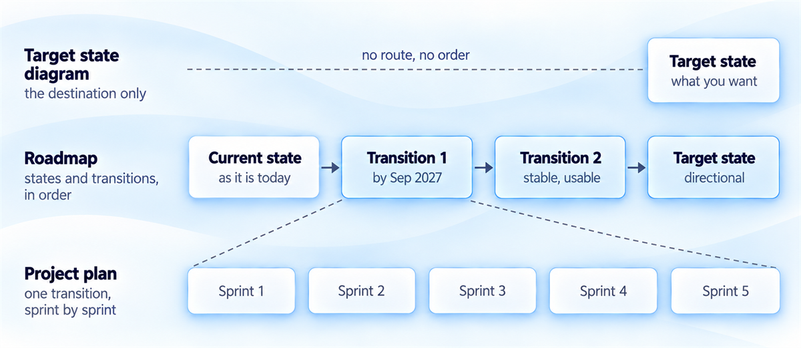
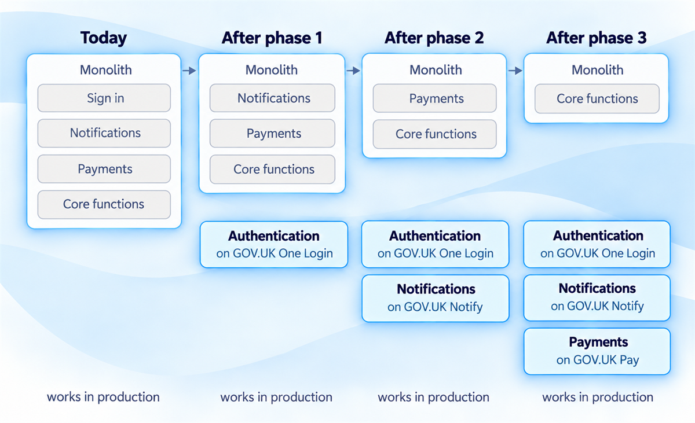
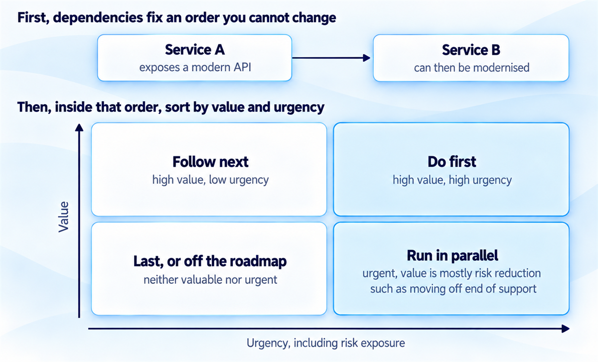
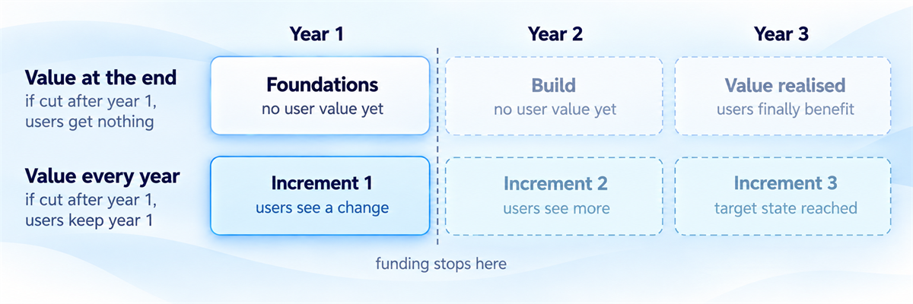
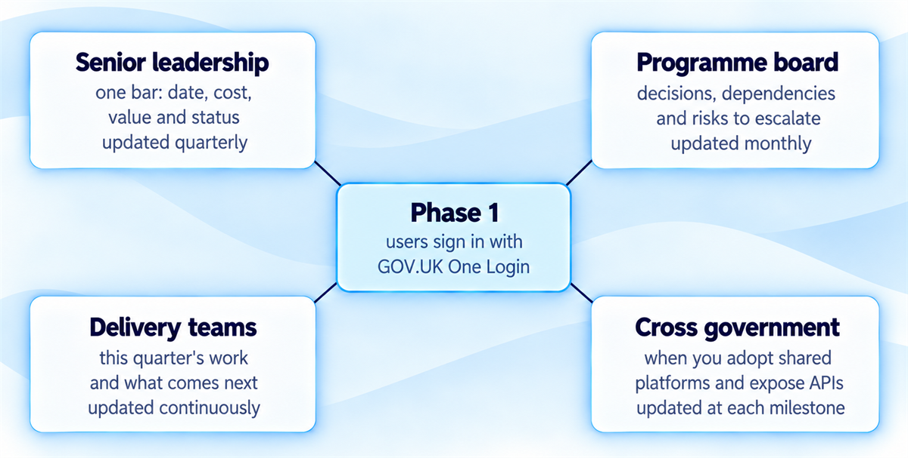
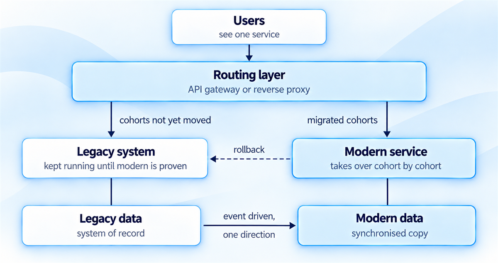

Architecture roadmaps and transition planning
Plan a route to the target state that survives funding cycles and delivers value along the way.
You'll come away with:
- What a roadmap shows that a target state diagram and a project plan do not
- How to sequence change by dependency, value and urgency so value arrives early
- How to fit phases to Spending Reviews, annual planning and the digital pipeline
- How to present one roadmap to four audiences, and design the hybrid states between current and target
A target state tells you where the estate should end up. A roadmap is the route there: the sequence of changes somebody can fund and deliver. In government that route has to survive annual budgets, Spending Reviews, shifting ministerial priorities and teams that change halfway through.
What a roadmap is, and what it is not
An architecture roadmap is a time-sequenced plan showing how the technology estate moves from its current state to a target state through a series of planned changes. Each change delivers value you can identify and leaves the estate in a stable, usable intermediate state.
Two artefacts get confused with it. A target state diagram shows where you want to end up and says nothing about the route. A project plan specifies tasks, resources and deadlines at a granular level. The roadmap sits between the two, working in architectural states and the transitions that connect them. It says that by September 2027 the authentication service will be migrated to GOV.UK One Login. The project plan says how that migration happens, sprint by sprint.

Common mistake: "Once the roadmap is signed off, it is a commitment."
It isn't. It is the best plan on current information, and in government that information moves constantly. Political priorities shift, funding is reallocated and new requirements turn up. Review the roadmap at least quarterly and change it when circumstances change. A roadmap nobody updates is either fiction or irrelevant.
Five tests tell you whether a roadmap is worth keeping:
- An honest current state, with nothing simplified or idealised
- Value you can identify at every transition, before the target is reached
- Explicit dependencies
- A sequence that respects funding cycles and delivery capacity
- Intermediate states that are all stable and operable, so there is never a point where the system does not work
Why roadmaps fail
Roadmaps fail for predictable reasons. They promise transformation in timescales that are physically impossible. They describe the end state without specifying the steps to reach it. They sequence work without checking whether the capabilities it depends on exist. They plan multi-year programmes as though the money were settled, when Parliament approves spending one year at a time. And they propose changes that conflict with ministerial priorities or agreements between departments.
A good roadmap is honest about constraints, specific about sequence and realistic about timelines. It delivers value at every intermediate state instead of holding it all back for the end, and it assumes priorities will change, budgets will move and teams will come and go before it is finished.
Every stop on a roadmap should be worth having if it turns out to be the last one.
Current state, target state and the states between
A roadmap connects three views: the current state you have today, the target state you want, and the transition architecture, meaning the intermediate states you pass through on the way.
Assess the current state honestly. Record each system's condition as well as its existence: which systems are healthy and well maintained, which are accumulating debt, which are approaching end of support and which are actively constraining delivery. For systems that may be legacy, the Legacy IT Risk Assessment Framework gives you a structured way to score and prioritise the risk. An optimistic current state produces an unrealistic roadmap.
Check before relying on it: GDS published an updated definition of legacy IT in August 2026 and the framework is being reviewed to align with it.
Define the target state with a precision that matches its distance. At the strategic level it describes characteristics: cloud-native, event-driven, API-first, aligned with cross-government platforms. At the tactical level it names specific changes, such as legacy system X replaced by modern service Y, or integration pattern A replaced by pattern B. Targets six to twelve months away should be specific. Targets three to five years away can stay directional.
The transition architecture is where roadmapping gets hard, because you cannot jump from current to target in one move. Every intermediate state has to be achievable within a funding period, stable enough to operate in production, valuable enough to justify the investment, and positioned to enable the next transition.
Take a monolith with a target state of fully decomposed microservices. Phase 1 extracts authentication as an independent service, which carries the most value and enables GOV.UK One Login. Phase 2 extracts notifications and enables GOV.UK Notify. Phase 3 extracts payment processing and enables GOV.UK Pay.

Each phase delivers value on its own and leaves the system workable. If Phase 3 is delayed or descoped, you lose Phase 3 and keep everything before it.
Sequencing for value, risk and dependency
The order you work in decides whether value arrives early or only at the end, and whether risk comes down steadily or piles up. Three pressures pull on it.
Value-first. Do the most beneficial changes earliest. Stakeholders see a return quickly, momentum builds for continued funding, and a roadmap interrupted by a funding cut or a change of priority has already delivered its most important improvements.
Risk-first. Deal with the most dangerous items earliest, so an avoidable failure does not land while you are still planning. A system on end-of-support infrastructure moves ahead of optimisation work on stable systems, and a single point of failure in a critical integration gets resilience before anything gets new features.
Dependency-aware. Do not plan work that relies on something not yet done. If service B cannot be modernised until service A provides a modern API, A comes first. These dependencies often cross team and departmental boundaries, which makes them harder to manage.
In practice you balance all three, and the order in which you apply them matters.

Start with dependencies, because they fix an order you cannot change. Within that order, sort what remains by value and urgency, counting risk exposure as urgency:
| High urgency | Low urgency | |
|---|---|---|
| High value | Do first | Do next |
| Lower value | Run in parallel: usually risk reduction, such as moving off end-of-support infrastructure | Do last, or take off the roadmap |
Your roadmap also sits inside a cross-government frame. The Roadmap for Modern Digital Government, published in January 2026 and due to be updated regularly, sets the direction departmental roadmaps should align with. That matters most where your department has specific commitments, such as adopting GOV.UK One Login, contributing to shared platforms, or remediating legacy systems, which the State of Digital Government Review identified as a systemic risk.
Fitting the roadmap to funding cycles
Government funding runs in cycles, and a roadmap that ignores them gets broken by them.
Funding models are changing: in September 2025 GDS and HM Treasury began piloting new funding models for digital work, including staggered funding for live services and outcome-based portfolio funding, to prepare departments for wider adoption at the next Spending Review.
Spending Reviews set departmental budgets for several years at a time. Under the Charter for Budget Responsibility, the Treasury holds one every two years and sets spending plans for at least three. Spending Review 2025 set day to day budgets to the 2028 to 2029 financial year and capital budgets to 2029 to 2030, and the next is due in 2027. If your roadmap needs sustained investment over three years, make the case at Spending Review time.
The roadmap also has to appear on the digital pipeline. Digital and technology spend controls were removed from 1 April 2026. In their place, HM Treasury requires every organisation to keep and share a pipeline of upcoming digital and technology spend, recorded through Government Assurance Services. The Digital Assurance Playbook explains how it works.
What goes on the digital pipeline
- Anything with a whole-life cost over £5 million, unless your organisation sets different thresholds
- Any spend on cryptographic products
- Ideas as soon as you know about them, before they have a cost
- Initiatives tied to the Roadmap for Modern Digital Government, and to likely commitment areas for Spending Review 2027
Being on the pipeline is not approval. Anything above your organisation's Delegated Authority Limit still needs separate HM Treasury approval.
Your architecture roadmap is the natural source for these entries.
Inside the Spending Review settlement, annual business planning allocates money to programmes year by year, so each year's work should be a complete, fundable package that delivers value within that year even if later years are never funded. Quarterly planning in agile delivery breaks the year down again, so set milestones that can be reached inside a quarter and shown at governance checkpoints.
The test is whether each phase stands on its own. If Phase 1 delivers value whether or not Phase 2 ever happens, the roadmap survives funding uncertainty. If Phase 2 only makes sense once Phase 3 is complete, you have created a dependency that a funding cycle can break.
The classic trap is a three-year plan with all the value at the end. Year 1 is foundations: infrastructure, platforms and technical enabling. Year 2 is build. Year 3 is value realisation, when users finally benefit. Cut the funding after year 1 and you have paid for foundations that deliver nothing on their own. Plan every year to deliver something users can see, even if each step is small.

A plan that only pays out in year three is a bet that nothing changes for three years.
One roadmap, four audiences
One roadmap serves several audiences. The content stays the same while the detail and the framing change. Follow Phase 1 of the monolith example, moving sign in to GOV.UK One Login, through each of them.

Senior leadership, meaning the senior responsible owner (SRO), Director General or CTO, see Phase 1 as one bar on a one-page visual roadmap: "Users sign in with GOV.UK One Login", with a target date, a cost and a status colour for planned, in progress or complete. The other major transitions sit around it in swimlanes. They need to see what will be different in twelve months, what it costs, what value it delivers and what risk it removes. Leave the technical detail out.
Programme boards see what sits behind the bar: the decision to switch off the old sign-in and when it has to be made, the dependency on the One Login integration work, any risk that needs escalating, and whether the phase is on track. Dependencies on other departments, vendors and policy decisions become visible here.
Delivery teams see the bar broken into this quarter's work: extracting the authentication module, putting the routing layer in place and planning the cutover in cohorts. They also need sight of Phase 2 and GOV.UK Notify so that today's work does not block it. Items further out can stay at lower detail.
Cross-government audiences, such as the GDS Enterprise Architecture team and the Technical Design Council it set up, see Phase 1 as a platform adoption milestone. They need to know when your department will adopt shared platforms such as One Login, when you will expose APIs for use across government, and where your roadmap might conflict with or benefit from cross-government direction.
Cadence matters as much as content. Update senior leadership quarterly and programme boards monthly. Delivery teams see changes continuously, because roadmap changes are part of their regular planning. Cross-government audiences hear at each major milestone.
Designing the transition architecture
During any transition you operate a hybrid, part legacy and part modern. That hybrid is the transition architecture, and it is more complex than either end because it supports old and new approaches at once: data synchronised between legacy and modern stores, users reaching some functions through the old interface and others through the new, and integrations that work with old protocols and new APIs. It needs designing as carefully as the target state.

Five principles keep the hybrid under control:
- Minimise dual running. Every day you operate both systems costs money and creates risk, so migrate users in cohorts instead of running both systems indefinitely.
- Keep the transition invisible to users. Routing layers such as API gateways and reverse proxies direct traffic transparently, so nobody needs to know which system handled their request and nobody has to switch at once.
- Design for rollback. If the modern system develops problems, you must be able to route traffic back. Keep the legacy system running until the modern one has proven stable in production for a defined period.
- Manage data consistency. Event-driven synchronisation can carry changes from either system to the other, but changes then arrive from both sides and you need rules for resolving conflicts. Where you can, make one system the system of record for each data set and synchronise in one direction. Perfect consistency may not be achievable mid transition, so define what inconsistency is tolerable.
- Document the transition state. It is temporary, and it is also the state you are operating right now. The operations team needs to know how things work today, and the documentation should change as each transition completes.
The state in between is the one you actually run. Design it as carefully as the destination.
Roadmap checklist
Before you take a roadmap to a board, check that:
- Every phase delivers value users can see, even if later phases are never funded
- Dependencies are explicit, including those across teams and departments
- Each year's work is a complete, fundable package, and upcoming spend is on the digital pipeline
- Each audience gets the right level of detail at the right cadence
- Every transition state is stable, operable, documented and can be rolled back
This guide describes practical architecture roadmapping and transition planning for Solution Architects working around UK government services. The phases, sequencing rules and audience views are teaching aids rather than a mandatory method. Funding cycles, spend thresholds and cross-government arrangements change.
Last reviewed October 2026 against the government sources below. Policy, funding routes and guidance change, so check the current source before relying on it.
- HM Treasury: Supply Estimates guidance manual (2026)
- GOV.UK: Legacy IT Risk Assessment Framework
- GOV.UK: Updated definition of legacy IT
- Roadmap for Modern Digital Government
- Roadmap for Modern Digital Government: Changing how we fund digital work
- GOV.UK: State of Digital Government Review
- GOV.UK: Charter for Budget Responsibility
- HM Treasury: Spending Review 2025
- GOV.UK: Digital Assurance Playbook
- GOV.UK: The role of the senior responsible owner
- GDS: The new Enterprise Architecture team